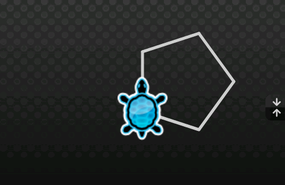
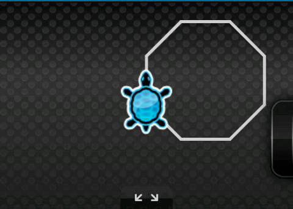
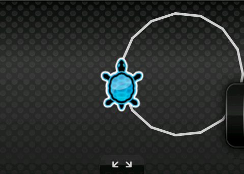
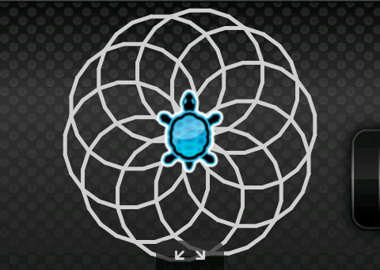
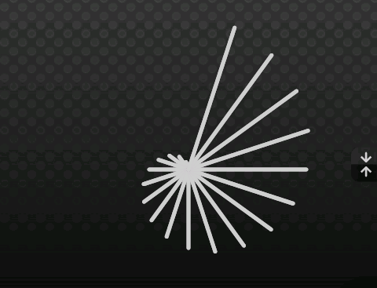
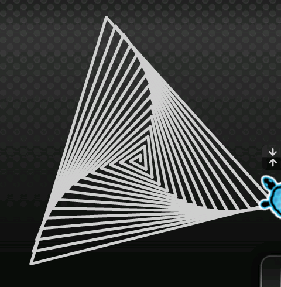

1.6 - Boucle for
Nous avons vu comment faire quelques boucles avec l'instruction 'loop'.
Il serait interessant et util de connaitre dans quel tour nous sommes, n'est-ce pas ?
C'est ce que nous avions fait dans le tutoriel sur le conditionnel.
'For' est une instruction qui va nous aider à faire cela.
synopsis
prérequis
Avant de lire ce tutoriel, il est important d'avoir lu : 1.1 - Qu'est ce qu'un programme ?, 1.3 - Boucles loops, 1.4 - Variables
notions de base
Nous avons vu ce qu'était une boucle
Il est possible, mais peu intuitif, de connaitre le numéro de décompte lorsque le programme est dans la boucle.
|
set i = 0; // initialisation loop (4) { // boucle tant que le compteur est < 4 algo.text ("le tour actuel est " .. i); i++; // equivaut à i = i + 1 } |
|---|
Note sur le code précédent : la boucle fonctionne 4 fois.
Donc i est initialisé à 0 et est incrémenté 4 fois donc : 0, 1, 2, 3
Pas 4, parce que 0 est considéré comme une itération.
Ce comportement n'est pas intuitif, mais il est du au fait que l'initialisation soit à 0 et que l'incrémentation s'effectue à la fin de la boucle comme ici.
En fait si j'ai donné cet exemple, c'est que la boucle 'for' fonctionne de la même manière.
L'instruction 'for' est conçu pour faire cela sur une seule ligne.
Elle permet de déclarer la variable, de l'initialiser et de l'incrémenter à chaque tour.
Le code suivant peu-t-être traduit de la sorte :
|
for (set i = 0 /* initialisation */; i < 4 /* condition */; i = i + 1 /* incrémentation */) algo.text ("le tour actuel est " .. i); } |
|---|
Notons que i = i + 1; peu-t-être écrit i++;
for
for
'for' est une instruction complexe mais utile.
Elle sert à répéter plusieurs fois une instruction (ou, nous l'avons vu, un bloque).
'for' est construit comme suivant :
for ([initialisation de la variable]; [condition de sortie]; [itération]) [instruction(s)]
La séquence du programme est :
- 1 D'abord la variable est initialisée.
- 2 La condition est vérifiée, si ok, alors on continue, sinon exit.
- 3 La variable est itérée.
- 4 Allez à 2.
|
// encore un carré for (set i = 0; i < 4; i = i + 1) { algo.go (100); algo.turnRight (90); } // fin de la boucle algo.hide (); |
|---|
{kind=link}
Vérifie si i est inférieur à 4, oui il l'est 0 ? Ok continue
Avance de 100
Tourne à droite de 90°
Itère, i = i + 1 donc i = 0 + 1 => i = 1
Vérifie si i est inférieur à 4, oui il l'est 1 ? Ok continue
Avance de 100
Tourne à droite de 90°
Itère, i = i + 1 donc i = 1 + 1 => i = 2
Vérifie si i est inférieur à 4, oui il l'est 2 ? Ok continue
Avance de 100
Tourne à droite de 90°
Itère, i = i + 1 donc i = 2 + 1 => i = 3
Vérifie si i est inférieur à 4, oui il l'est 3 ? Ok continue
Avance de 100
Tourne à droite de 90°
Itère, i = i + 1 donc i = 3 + 1 => i = 4
Vérifie si i est inférieur à 4, non! Il est égal à 4 ? Exit et continue après le bloque
Cache la tortue d'algo
étape
Avec la boucle 'for', il devient possible de compter avec d'autres pas que 1.
Par exemple, pour compter de 2 en 2.
Pour faire cela, deux choses sont nécessaires :
- Changer le pas (l'incrément) de l'instruction 'for'
- Faire très attention à ce que ce saut ne dépasse pas la condition. C'est pour ça qu'on préfère vérifier que le compteur soit < ou > plutôt que == (égale)
|
// compte de 2 en 2 for (set i = 0; i <= 8; i = i + 2) { text.output ("De 0 à 8 inclus de 2 en 2 : " .. i); } |
|---|
La condition i < garantie que si i deviens supérieur à 8 la boucle va tout de même sortir.
i = i + 2 va incrémenter i par 2 à chaque tour.
Note que la condition est i <= 8, ce qui inclus 8 : 0, 2, 4, 6, 8
compte à rebours
Il est également possible d'utiliser l'instruction 'for' pour faire un compte à rebours.
Pour faire cela, deux choses sont nécessaires :
- Changer le pas (l'incrément) par une valeur négative
- Inverser le nombre de départ et celui de la condition d'arrivé pour allez du plus grand au plus petit
|
// compte à rebour for (set i = 8; i >= 0; i = i - 1) { text.output ("De 8 à 0 de pas -1 : " .. i); } |
|---|
Le programme va allez depuis 8 à 0 à rebours
Il est initialisé avec 8 et la condition vérifie qu'il soit plus grand ou égale à 0
Execute le en mode pas à pas pour voir ce qu'il ce passe (c'est vrai pour tous les exemples).
Note : L'itération i = i - 1 peu-t-être écrit i--
à toi de jouer
Une autre façon d'écrire un pentagone
Crée un pentagone
Un pentagone est constitué de 5 lignes
{kind=link}
Polygone
Crée polygone
Un polygone est constitué d'un nombre quelconque de ligne
{kind=link}
Polygone définit par l'utilisateur
Dessine un polygone dont le nombre de ligne et la taille sont déterminés par l'utilisateur de ton programme.
.png){kind=link}
Boucles imbriquées
Dessine la figure suivante
{kind=link}
Joue avec les paramètres pour obtenir des géométrie amusantes
Variation sur les étoiles à base de ligne
Dessine une étoile à base de ligne en augmentant la taille des lignes
{kind=link}
Labyrinthe
Avec le changement de taille des branches de l'étoile, nous avons vu l'importance de la variable de compteur.
Essaie de dessine la spirale à 4 côtés comme suivant :
{kind=link}
Spirale triangulaire
Quelles sont les modifications dans le code précédent pour obtenir la figure suivante :
{kind=link}
Spirale
Joue avec les valeurs pour obtenir la figure suivante :
{kind=link}
Etoile
Dessine une étoile dont le nombre de branche est choisi par l'utilisateur
.png){kind=link}
sommaire
connaissances
Dans ce tutoriel, vous avez appris :
- qu'est ce que la boucle for ?
- comment l'utiliser ?
- comment l'utiliser pour faire un compte à rebour ?
- what are the loop instructions and structure ?
- comment l'utiliser pour faire des dessins encore plus beau ?
fonctions utilisées :
| Fonction | Déscription |
|---|